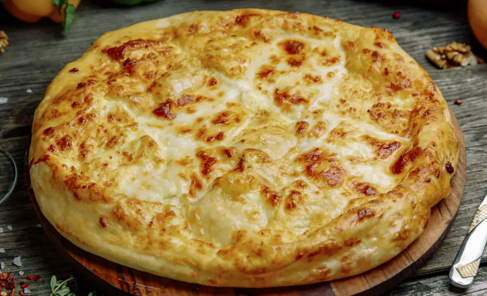

მეგრული ხაჭაპური

ინგრედიენტები
- 200 გრამი ხაჭაპურის ცომი
- 2 ცალი კვერცხი
- 200 გრამი სულგუნი
- 100 გრამი ფქვილი
- 70 გრამი კარაქი
მომზადების საფეხურები
- გააცხელეთ ღუმელი 200-220C გრადუსზე.
-
ხაჭაპურის შიგთავსის მოსამზადებლად გახეხეთ სულგუნი და გადაინახეთ 50
გრამი. დანარჩენი 150 გრამი ყველი კი მოათავსეთ თასში და ჩანგლით შეურიეთ 1
ცალი კვერცხი 50 გრამ კარაქთან ერთად.
- მეორე კვერცხის გული განაცალკევეთ ცილისგან და გათქვიფეთ.
-
მოზილეთ ხაჭაპურის ცომი ფქვილმოყრილ სამუშაო ზედაპირზე, დაასვენეთ 10 წუთით
და შემდეგ გააბტყელეთ. ცომის ცენტრში მოათავსეთ ხაჭაპურის შიგთავსი,
შეუკარით პირი, ამოატრიალეთ და ფრთხილად გააბრტყელეთ ხელებით. დაუტოვეთ
პატარა ნახვრეტი ორთქლის ამოსასვლელად.
-
გადაანაწილეთ გადანახული 50 გრამი გახეხილი ყველი ხაჭაპურის ზედაპირზე.
ცომის კიდეებს და ყველიან ზედაპირს ალაგ-ალაგ მოაცხეთ გათქვეფილი კვერცხის
გული.
-
საცხობ ლანგარს მოაყარეთ ცოტაოდენი ფქვილი, მოათავსეთ მასზე მეგრული
ხაჭაპური, შედგით გახურებულ ღუმელში და აცხვეთ დაახლოებით 15 წუთის
განმავლობაში. გამოცხობის შემდეგ, ზევიდან მოაცხეთ დარჩენილი 20 გრამი
კარაქი და გემრიელად მიირთვით!